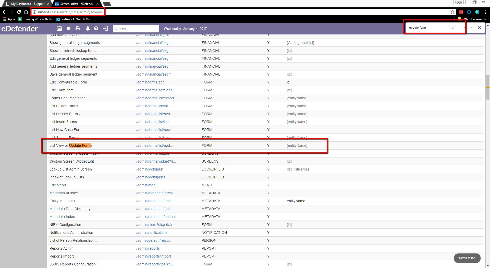

General Tips About Finding Things in eCourt
eCourt can be tricky, in the fact that from environment to environment there can be a different way to find each item. However, there is one constant that can be used as a backup: the “screens” screen. This screen lists out every default screen, and starting here you should be able to get to any configuration item you would need to get to. The URL for this is:
ServerName:Port/WebAppName/cms/admin/screens.
Once there you can use ctrl+f to search for the screen you are looking for such as “security” or “update forms”
Generally any tabs with “setup” or “admin” are a good place to start, but if you can’t find it there the screens page is always a good backup